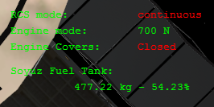
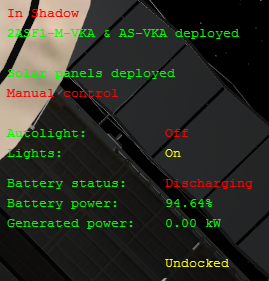
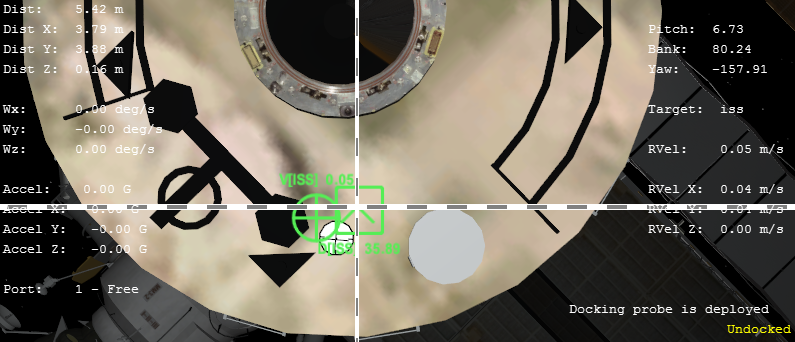

Soyuz TM/TMAのキー操作一覧
ダウンロード・インストールについては以下のページを参照してください。
Soyuz FG(U)のインストールと操作
基本操作については以下のページを参照してください。
ISS v3.2 プログレス&ソユーズの操作
キー操作一覧
| E | エンジンカバーを開閉 |
| Ctrl+E | エンジン出力を変更（300N, 700N, 6197N） |
| M | RCSのモードを変更※ |
| Alt+L | ライトを手動で点灯・消灯する |
| Ctrl+L | ライトを自動点灯させる |
| V | 2AO-VKAアンテナを手動で展開・格納 |
| Y | ドッキングプローブを展開・格納 |
| K | ソーラーパネルを太陽に向ける |
| Ctrl+O | ドッキングターゲットを選択 |
| O | ドッキングポートを選択 |
| U | HUDの表示を変更 |
| A | BO（軌道船）を減圧する |
| J | モジュールを分離する（2回押すと帰還船が完全に分離される） |
| B | 弾道再突入モードを開始する |
| S | （プログレスのみ）燃料タンクを選択 |
※RCSはContinuousなら連続して噴射、Impulseにすると短時間だけ噴射する
HUD
Uキーを押すことで、HUDを3つのモードへと切り替えることができます。
何も表示されない場合は最初にHキーを押してください。
推進システム
RCSやエンジンカバー、残り燃料を表示します。

電源管理
バッテリー残量、ライトの点灯モード、充電中かどうかを表示します。

ドッキング
Ctrl+Oでターゲットを指定してから、Oを押してドッキングポートを指定します。

| Dist | ターゲットへの距離 |
| Wx/Wy/Wz | 角速度。機体が回転しているかどうかを表す |
| Accel | 加速度 |
| Port | 選択したドッキングポートの番号 |
| Rvel | ターゲットとの相対速度 |